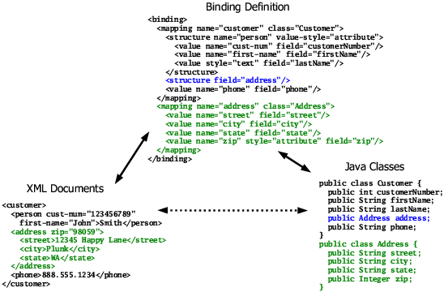
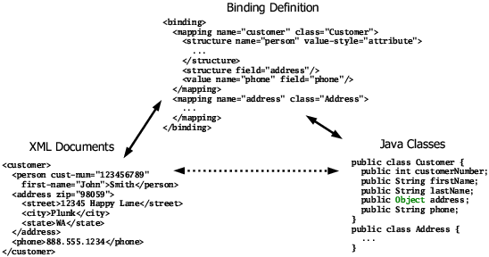
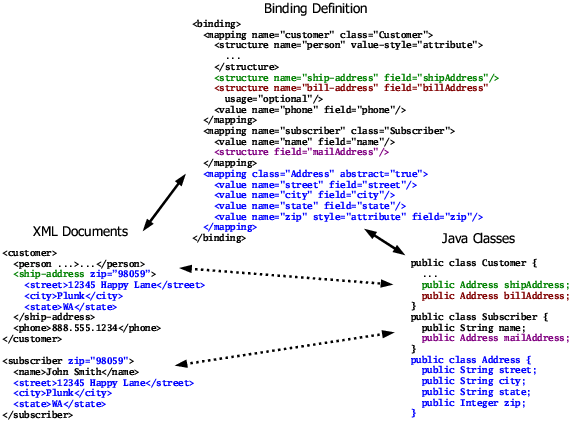
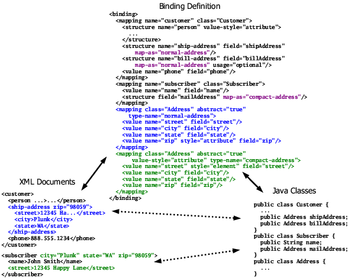
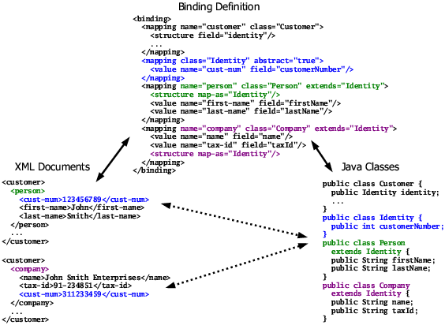
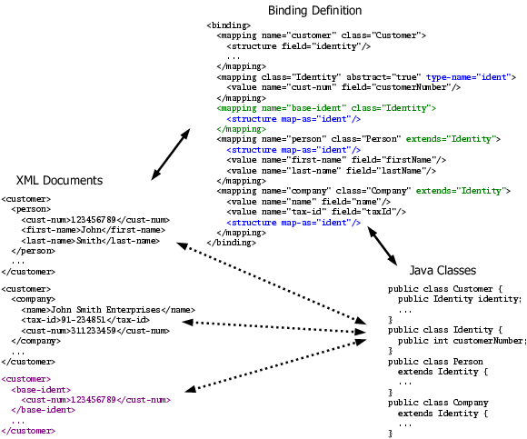

The many flavors of mappings |
|
The many flavors of mappings |
|
Normal mappingsYou can define multiple mappings within a single binding, as already demonstrated in the last collections examples. These mappings may all be top-level (children of the binding element), or may be nested within other mapping definitions. Nested mapping definitions are only usable within the context of the containing mapping. In general, it's not a good idea to nest mapping definitions more than one level deep, or inside mappings other than the one used for the root element of your documents, because of performance concerns. Figure 12 is a trivial example of using multiple
mappings. The first mapping in this example binds the root customer
element to the  Using empty structure elements to reference mappings, as shown in Figure 12, is most useful when an object reference can be to instances of different classes. When there's no mapping defined for the exact type of the object reference associated with the structure, but there are one or more mappings for assignment-compatible types (such as subclasses), JiBX will accept any of the assignment-compatible types at runtime and use the appropriate mapping. Figure 13 demonstrates using an empty
structure element with no mapping matching the object type. The
only change from the last example is that I changed
the type of the  You can force an empty structure element to use a particular mapping with the map-as attribute. This restricts the value for the referenced object to always be of the type of that mapping. It's generally a good idea to use map-as when you're expecting to use a specific mapping, even when JiBX will automatically select that mapping (as in Figure 12), just to make the linkage to a particular mapping explicit and avoid any potential confusion. I'll show some examples of using the map-as attribute later on this page. Abstract mappingsAll the mapping examples I've used so far are normal mappings, each relating an element name to instances of a particular class. JiBX also lets you define abstract mappings, which are essentially anonymous bindings for classes. Abstract mappings can be referenced from different contexts with different element names, or with no name at all. Figure 14 shows an example using an abstract mapping. Figure 14. Simple abstract mapping This binding defines normal mappings for two classes, the You can define multiple abstract mappings for the same class, using names to
distinguish between the mappings. Figure 15 shows a
modified version of the last example, where I've defined two different abstract
mappings for the  The Figure 15 changes have no effect on the document
with the customer root element, since the abstract mapping used for the
You can use interfaces as well as regular classes for abstract mappings, which is useful when the interface defines get/set methods to be used by the mapping. You can also use interfaces and abstract classes with a normal mapping definition in some circumstances - the basic requirement here is that there has to be a way to create an instance of the interface or abstract class when unmarshalling (as with a factory method, discussed in User extension method hooks). Mappings and inheritanceBesides the "free standing" mappings you've seen so far, you can also define extension mappings which are linked to other mappings. Each extension mapping references some base mapping. By attaching itself to that base mapping, the extension mapping becomes an alternative to the base mapping anywhere the base mapping is invoked in the binding. Extension mappings were originally intended to be used in representing polymorphic class structures, where different subclasses of some base class can be used interchangeably. They work especially well in the case where the base class is never used directly - in this case you can define an abstract mapping for the root class of the hierarchy, then add normal mappings which extend that abstract mapping for each subclass you want to include in your binding. Figure 16 shows a simple example of this approach. Figure 16. Abstract and extension mappings Here I've changed my earlier example code to support two types of customers,
persons and companies. The I've highlighted the handling of the base The base for an extension mapping doesn't have to be an abstract mapping. It's generally easiest to structure your extensions to use an abstract base when you can, but there are cases where that's just not possible. For example, if instances of your base class can be used directly (rather than only instances of subclasses), you need to define a concrete mapping for that root class. Figure 17 gives an example of this situation. Figure 17. Extending a concrete mapping The difference from the last example is that in
Figure 17 the base Even though the original intention of extension mappings was to represent polymorphism, they can also be used in other circumstances - there's no requirement that the classes handled by the extension mappings have any particular inheritance or implements relationship to the class handled by the base mapping. This flexibility can be useful when working with XML representations which assume a particular inheritance structure (in the form of substitution groups) that doesn't match the intent of your application code. This page covers most of the mapping element options and usage, but see the <mapping> element details page for full details. |